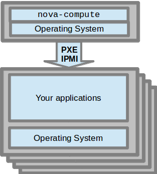
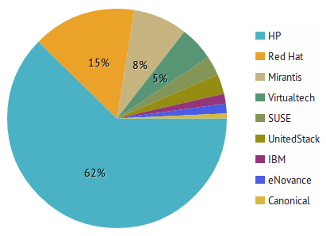

In the beginning
Grizzly summit
(November 2012)
Grizzly Release
(April 2013)
Baremetal's deployment paradigm

Havana summit
(April 2013)
OpenStack Ironic
Not just a split - a redesign
Ironic is a service to
provision
bare metal nodes
Ironic is not...
- a Configuration Management Database
- a hardware lifecycle management tool
- Be a hardware API and no more
- Be resilient to failures
- Don't re-invent the wheel
- Be extensible
- Admins use Ironic API to enroll, configure
- Tenants use Nova API for boot, destroy, restart, etc
- Network config done by Neutron (*)
- Storage config done by Cinder (*)
Where are we now?
(July 2013)
Contributions have been amazing

but ironic is not finished
some significant limitations
Networking
disk / raid configuration
Firmware security
Other considerations
- http://docs.openstack.org/developer/ironic/
- https://github.com/tripleo/incubator
irc.freenode.net
- #tripleo
- #openstack-ironic
- #openstack-nova